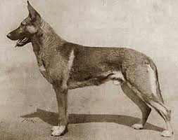
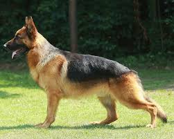
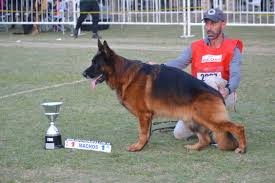

Bienvenido a mi página personal
Mi nombre es Mirko Melfi, y estoy en 5to año de Ing. Informática.
Elegí esta foto porque una de mis pasiones, además de programar, son los perros.
Soy adiestrador de perros, y mi raza de perros favorita es el Ovejero Alemán, sin duda alguna.
Y como todo buen argentino, el mate no puede faltar.

"La creatividad nos persigue a todos, pero solo nos encuentra cuando estamos trabajando"
Mis sitios favoritos
Evolución del Pastor Alemán
| 1900 | 1950 | 2000 | 2025 |
|---|---|---|---|
|  |  |  |
Con los años se empezó a priorizar la estética por sobre la funcionalidad, afectando la salud del animal.